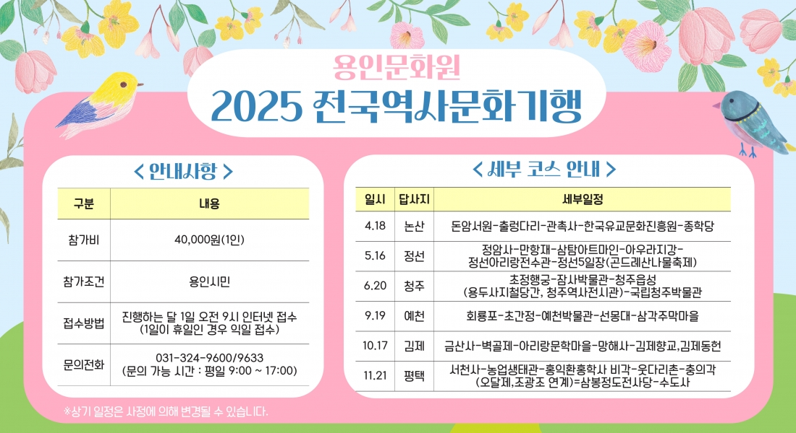
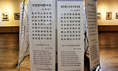
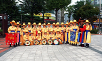
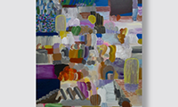

용인 문화대학은 수시 접수 합니다.
10개코스 중 1개코스 선택
매월 테마를 중심으로
문화의 시대를 함께 이끌어 갈 시민 회원을 모집합니다
문화대학은 수시접수합니다.

시간:수요일10:00~12:00
장소 : 문화예술원

시간 : 월요일 16:00~19:00
장소 : 실기연습실
시간 : 화요일 10:00~12:00
장소 : 제1강의실

시간 : 금요일13:00~15:00